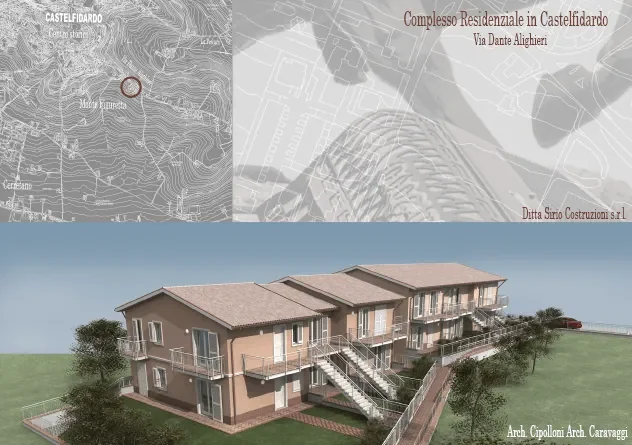

Edilizia residenziale
Immobili a Castelfidardo.
Tra i progetti residenziali di Sirio Costruzioni figura il complesso a schiera di Castelfidardo. Contattaci per conoscere la disponibilità aggiornata e chiedere informazioni sulle unità.

Il complesso residenziale.
Il progetto comprende abitazioni a schiera. Nella documentazione del complesso figurano ingressi indipendenti, garage e spazi esterni. Dotazioni e caratteristiche specifiche dipendono dall’unità.
Per informazioni su planimetrie, caratteristiche e visite puoi scriverci o chiamare la sede di Sirolo.
Immagini del progetto
Tavole e prospetti del complesso.


Informazioni immobiliari
Ti interessa un immobile?
Chiedici quali unità sono disponibili e come organizzare una visita.